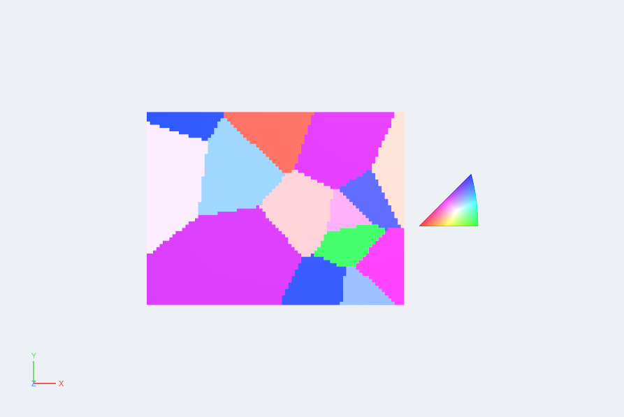
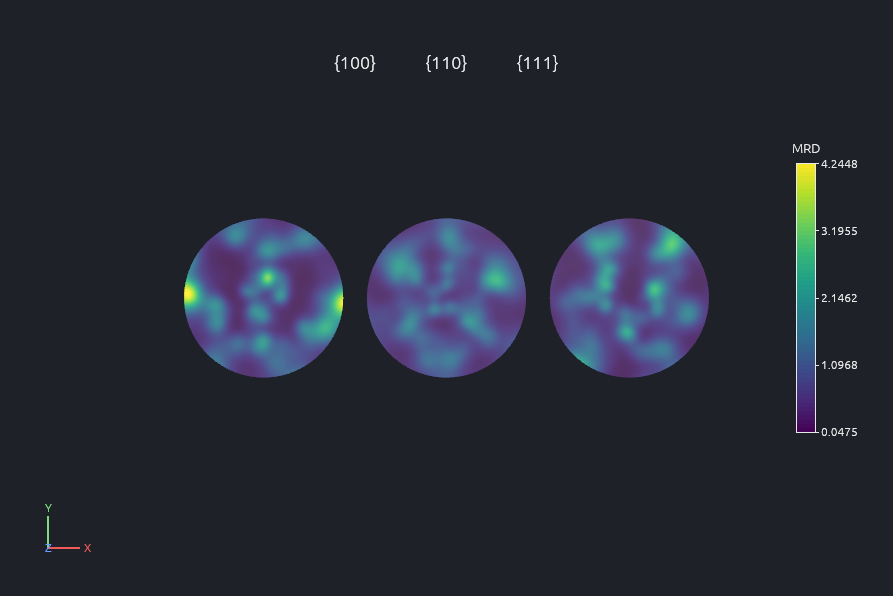
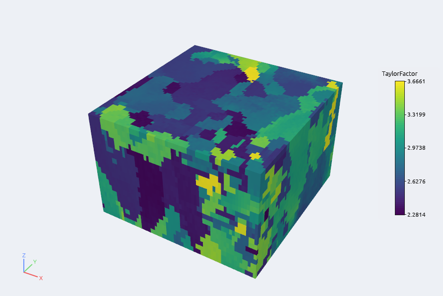
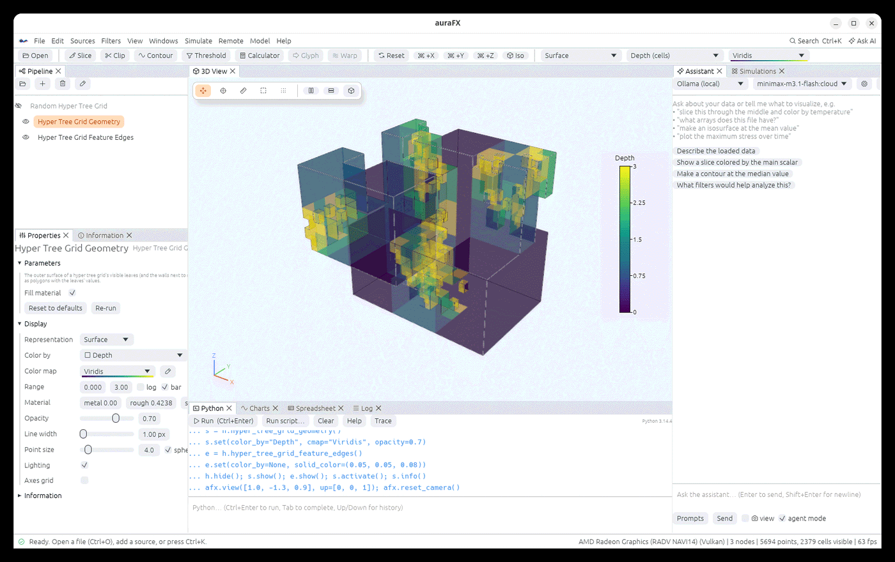
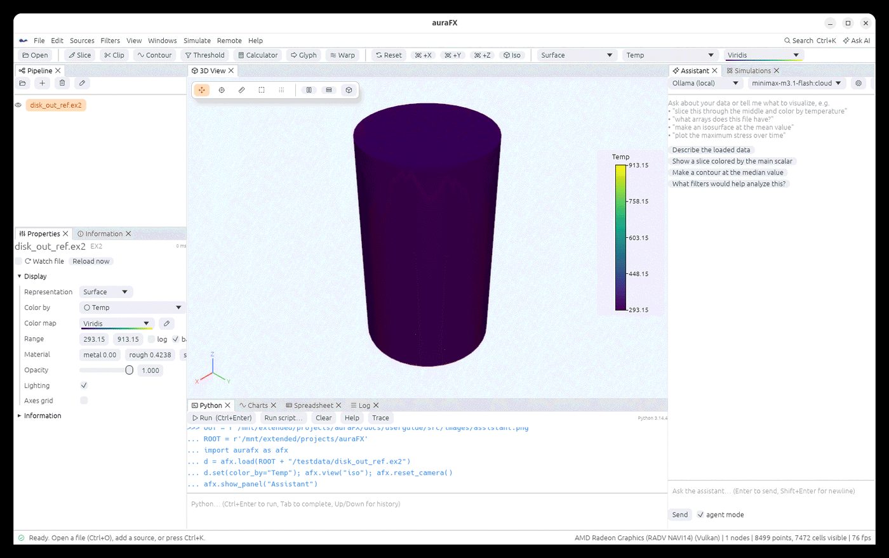

Visualize. Analyze. Orchestrate.
The open-source, AI-enhanced scientific visualization and analysis engine, and a simulation workbench for the solver of your choice, built in Rust for seamless local and remote HPC workloads.
It ingests heterogeneous engineering datasets and standalone geometries, renders flows, fields and volumes on any GPU through its native graphics API, and constructs high-fidelity meshes, uniquely unifying CAD-free geometric meshing with polycrystal grain-structure generation and microstructural EBSD analysis. By coupling an embedded, NumPy-integrated Python runtime with a pipeline-aware AI agent, it streamlines simulation workflows alongside the 3D view, from raw data manipulation directly into local or remote HPC simulation suites over SSH and Slurm.
# Linux and macOS
curl -fsSL https://raw.githubusercontent.com/aashiquear/auraFX/main/scripts/install.sh | sh
# Windows (PowerShell)
irm https://raw.githubusercontent.com/aashiquear/auraFX/main/scripts/install.ps1 | iex
What you can do with it
Every clip below is auraFX's own rendering of real data: results of mechanics, phase-field, grain-growth, molecular-dynamics, flow, chemistry and geoscience runs, meshes it generated, and microstructures it measured. No window chrome, no retouching.
Explicit dynamics
A crushed can from an Exodus II file, colored by equivalent plastic strain. Play, scrub, chart any variable over time, export the clip.
A polycrystal plate under tension
Built in auraFX (geometry → hex mesh → 30 grains), run in a crystal-plasticity solver from the Simulations panel, read back with its grain boundaries. Displacements scaled up.
Spinodal decomposition
A Cahn–Hilliard run from the shipped examples, launched as a Python pipeline and opened as it writes its time series.
Potts-model coarsening
Grain ids over 300 Monte Carlo sweeps. The same grain filters that segment EBSD scans measure sizes, shapes, neighbors and misorientations here.
Molecular dynamics
A LAMMPS dump of a melting FCC crystal, atoms colored by potential energy. Dumps, data files and XYZ open directly, gzipped or not.
Streamlines through a heated disk
Stream Tracer and Tube on the velocity field, a translucent temperature contour, all multithreaded.
Molecules
PDB, XYZ, VASP, Gaussian cube and CML files as ball-and-stick, van der Waals or liquorice models, with bond detection and orbital isosurfaces.
Ocean and climate models
MPAS, POP, CAM-SE and CF NetCDF on the sphere; GeoTIFF, Esri grids and GIS vectors (Shapefile, GeoJSON, GeoPackage, …) without GDAL.
Terrain from an elevation model
A GeoTIFF raised into 3D with Warp By Scalar, one filter and one color map away from the raw file.
Grain boundary surfaces
Synthetic grains → boundary mesh → smoothing → each facet colored by its boundary plane in the crystal. The same chain works on a 3D EBSD volume.
All-hex meshes of real parts
Structured and overlay-grid hexahedral meshing, tetrahedra, boundary layers, quality tables, Exodus / Abaqus / Gmsh output.
GPU volume rendering
Volumes depth-merged with surfaces, path tracing, environment lighting, ambient occlusion, Eye-Dome Lighting, Surface LIC.

Orientation maps, IPF keys, grains, KAM, GND, twins.

Pole figures, inverse pole figures, ODF sections, misorientation distributions.

Schmid and Taylor factors, directional modulus, yield estimates for FCC, BCC, HCP.

Mesh a measured or synthetic microstructure, one block per grain, ready for a solver.

AMReX, FLASH, Enzo, Chombo and VTK AMR with their particles.

Trees, material interfaces, dual grids, depth limits.

Rasters and vector layers with their projections, no GDAL needed.

Path tracing, metal and rough materials, environment maps for the final figure.
Easy to use
A new user can drive it without the manual: open a file by dropping it on the window, click a filter in the toolbar, pick a color map. When you want more, the assistant and the Python console are one tab away and speak the same language.
- Ask for it. The AI assistant sees your pipeline and writes runnable code: “slice through the middle and color by temperature”, “plot the maximum stress over time”. Agent mode runs the code and iterates on what it sees. Works with Claude, any OpenAI-compatible API, or local models through Ollama.
- One line per idea.
afx.load("run.e").slice(normal=(1,0,0)).set(color_by="Temp"). NumPy in and out, a console with completion, scripts at startup, a trace of everything you clicked. - Command palette (Ctrl+K) for every filter, source and view; undo and redo; sessions saved as one file; dark, light or system theme.
- Every feature is documented in a user guide with a screenshot per feature, generated from the repository, so the pictures always match the app.

Python that reads like notes
d = afx.load("run.e")
d.contour(array="Temp", values=[400])
.set(color_by="Temp", metallic=1)
afx.over_time(d, "Temp", stat="max")
afx.save_animation("turn.mp4", orbit=72)Plugins in Python
Add a filter, source or reader with a decorator; the app reloads it when the file is saved and the assistant learns it.
@afx.filter("Double it")
def double(ds, factor=2.0):
ds["T"] = ds["T"] * factor
return dsGenerated meshes, in words
brick x 4 y 2 z 1
cylinder radius 0.4 height 2
subtract body 2 from body 1
mesh body 1 size 0.1 scheme overlay
sideset 1 add face 6 name 'top'Fast by construction
Rust, no garbage collector, every core for the filters, and a wgpu renderer that speaks Vulkan, Metal and DX12 natively. Big data stays where it is: a server reads and filters it on the cluster and sends back only what you look at.
4-million-cell slice
Slice, Contour, Clip, Threshold, Extract Surface, Stream Tracer and Gradient run on all cores and give the same answer on any thread count.
Volumes and millions of points
GPU volume rendering merged with surfaces, instanced glyphs, order-independent transparency, 60 fps interaction on laptop GPUs.
Remote data
afx.load(path, host="cluster") runs the pipeline where the file is; only the visible surface comes over, or just pictures when even that is too big.
Nothing to install around it
Packages bundle Python 3.12 and NumPy. No Qt, no VTK, no environment to set up. The portable Linux tarball runs from any folder.
From the first picture to the next run
The Simulations panel launches solvers on this computer, on a remote GPU box over SSH, or through Slurm, follows their logs, and opens the results when they finish. Three templates write their input files from the data in your pipeline.

- Templates for LAMMPS, MOOSE applications, OpenFOAM, SPPARKS, PINNACLE and Python pipelines; or any shell command.
- Cases from the pipeline: a grain mesh becomes a crystal-plasticity case (mesh, orientations, slip systems, input deck); a microstructure volume becomes a Potts grain-growth run.
- Parameter sweeps, NVIDIA and AMD GPU selection, environment lines, Slurm partitions and time limits.
- Live reload of files a running solver writes; a GPU monitor and a remote file browser for every host.
- Reopen for analysis: results are named after their run and carry the grains back, so sizes, misorientations, Schmid factors and statistics per grain are a filter away.
poly = afx.plate_mesh().assign_grains(grains=30, blocks=True)
afx.run_case(poly, "pinnacle", "~/runs/plate", host="cluster",
np=16, strain=0.02, steps=40) # results open when doneReads what your codes write
All readers are written in Rust and checked against reference implementations; writers are read back and compared.
| Meshes and fields | Exodus II, VTK legacy and XML (all types, parallel, multiblock, .pvd), VTKHDF, OpenFOAM (ASCII/binary/gzip, decomposed), EnSight Gold, CGNS (HDF5 and ADF), Xdmf 2/3, Tecplot, PLOT3D, Abaqus and Gmsh (written), STL, PLY, OBJ, CSV |
|---|---|
| Particles and molecules | LAMMPS dumps and data files, XYZ / extended XYZ, PDB, VASP, Gaussian cube, CML |
| Climate, ocean, GIS | NetCDF (CF, POP, CAM-SE, MPAS), GeoTIFF, Esri ASCII grid, ERDAS Imagine, Shapefile, GeoJSON, KML/KMZ, GeoPackage, FlatGeobuf, GML, MapInfo, file geodatabases |
| Adaptive and special grids | AMReX plotfiles, FLASH, Enzo, Chombo (1-D to 4-D) with particles; hyper tree grids; discontinuous-Galerkin cell grids; Lagrange and Bezier cells of any order, drawn curved |
| Materials | EBSD maps (.ang, .ctf, .h5ebsd, EDAX and Bruker .h5), .dream3d volumes and meshes (read and written, with the pipeline that made them), SPPARKS site files, orientation .tex files |
| Writers | VTK XML and legacy, VTKHDF, Exodus II, EnSight, Xdmf, CGNS, Abaqus .inp, Gmsh .msh, .dream3d, STL, PLY, CSV; glTF, OBJ, X3D and VRML scenes; PNG, SVG, GIF and MP4 |
Install
Prebuilt packages for every release are on GitHub Releases. Desktop packages bundle their own Python 3.12 with NumPy; nothing else is needed besides a GPU driver (Vulkan on Linux and Windows, Metal on macOS).
| Platform | Package | How |
|---|---|---|
| Linux x86_64, aarch64 | .AppImage, .tar.gz | curl -fsSL https://raw.githubusercontent.com/aashiquear/auraFX/main/scripts/install.sh | sh, or run the AppImage |
| macOS 11+ (Apple silicon, Intel) | .dmg | the same install.sh line, or drag the app to Applications |
| Windows 10/11 x64 | installer, portable .zip | irm https://raw.githubusercontent.com/aashiquear/auraFX/main/scripts/install.ps1 | iex |
| Android 8+ | .apk (viewer build) | download and open the APK |
| iOS / iPadOS 15+ | unsigned .ipa (viewer build) | sign and install with Xcode, AltStore or Sideloadly |
| Remote data server | aurafx-server (in every desktop package) | File › Open on Server… › Install server copies it to a host over SSH; see Data on another machine |
| From source | Rust 1.85+, Python 3.10+ headers | cargo build --release then target/release/aurafx |
The mobile builds are viewers (no embedded Python, no simulations). Release packages are built by GitHub Actions from the tagged source; checksums are in SHA256SUMS next to them.
Documentation
One user guide, three formats, all generated from the same Markdown sources in the repository.